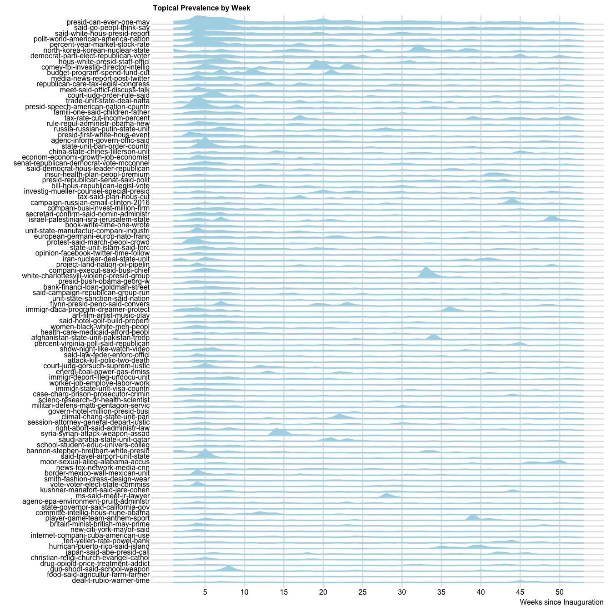

Some exploration for fun
With a focus on the legacy newspapers
Volume and complexity of news
Via Flesch-Kincaid readability measure: \[readability = 0.39 \left(\frac{words}{sentences}\right) + 11.8\left(\frac{syllables}{words}\right) \]
Moral foundations in news
More on moral foundations
Care-Harm dimension
Within news articles
Within op-eds
Ingroup/Loyaly-Other/Betrayal dimension
Within news articles
Within op-eds
Topics/themes in news
Via LDA topic model

See more on topics here.
So much to do
Analyze
- issue emphases, ideological positioning, named entities, events, …
- combinations of features (polarity and issues, morality and topics)
- word embeddings for “partisan bias” in news sources?
Build
- dynamic visualizations
- digital, searchable resource